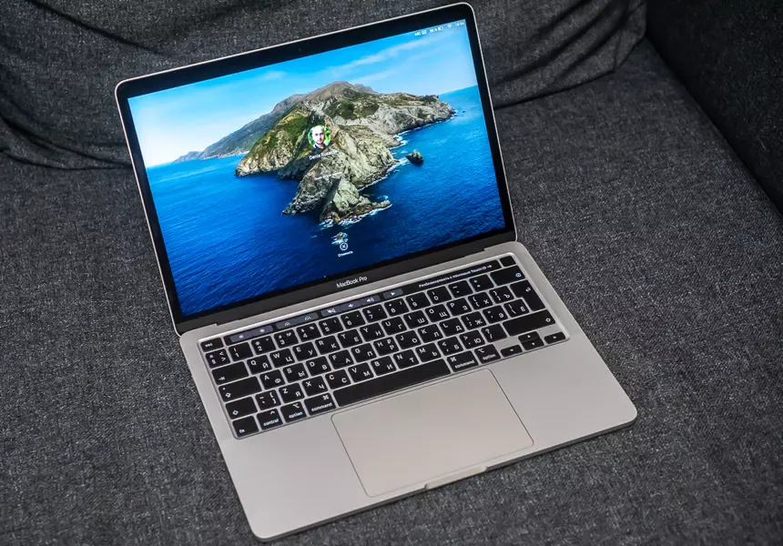

Apple II (у найменуванні різних моделей використовувалося також написання «Apple ][» і «Apple //») — перший комп'ютер,
що серійно випускався компанією Apple Computer. Це прямий спадкоємець комп'ютера для ентузіастів Apple I, який ніколи не вироблявся
у великих кількостях, але вже містив багато ідей, які забезпечили успіх Apple II.
Комп'ютер був вперше представлений у 1977 році на виставці West Coast Computer Fair і став одним з найперших і найуспішніших персональних
комп'ютерів того часу. Вироблялося кілька моделей Apple II, і найпопулярніша з них, з відносно невеликими змінами, продавалася до 1990-х.
Всього було виготовлено від 5 до 6 мільйонів екземплярів Apple II[1].
На відміну від інших машин того часу, Apple II виглядав більш схожим на офісний інструмент, ніж на елемент електронного
обладнання. Це був комп'ютер, який підходив для домашньої обстановки, столу менеджера або шкільного класу.
Також унікальним для того часу було використання кольору і графічних режимів високої роздільної здатності, його звукових можливостей, а
також вбудованої мови програмування Бейсік. У порівнянні з більш ранніми машинами, ці можливості були добре документовані та прості у вивченні.
Тим самим, Apple II позначив початок революції в області персональних комп'ютерів: це була машина для мас, а не тільки для любителів, учених чи
інженерів.

У 1976 році Стен Ши заснував компанію Mulitech International. Початковий капітал фірми склав 25 тис. американських доларів
Спочатку в компанії працювало 11 осіб.
У 1979 компанія сконструювала перший тайванський комп'ютер, призначений для експорту.
У 1981 компанія створила 8-бітний процесор MicroProfessor-II.
У 1985 компанія створила перший у світі 32-розрядний персональний комп'ютер, випередивши IBM[Що?].
З 1994 компанія входить до десятки найбільших постачальників ПК у світі.
У 1997 Acer представила нову платформу під назвою X Computer. Головна мета — замість дорогої універсальної машини представити
користувачеві кілька спеціалізованих пристроїв.
У березні 2008р. оголошено, що Acer купує компанію E-Ten Information Systems (виробник комунікаторів Glofiish, які здобули
широку популярність в Україні). Придбання компанії завершено в III кварталі 2008р. Сума угоди оцінюється в $290 млн.
У 2008 р. Acer виходить на ринок ігрових комп'ютерів з лінійкою настільних комп'ютерів Acer Aspire Predator.
У лютому 2009 на виставці Mobile World Congress в Барселоні компанія представила свою першу продуктову лінійку комунікаторів
(сама компанія називає пристрої смартфонами), вироблену ресурсами компанії E-TEN.
У травні 2011 року на конференції Google I/O компанія Acer оголосила про випуск для продажу перших Хромбуків, а 15 червня 2011
почалися їх поставки.
У 2017 р. Acer стала найбільшим корпоративним акціонером AOPEN Inc.
У 2019 р. Acer представила суббренд ConceptD, що орієнтований на потреби представників творчих професій. Ноутбуки, монітори та настільні
комп'ютери оптимізовані для таких робіт як дизайн, професійна обробка графіки та відео, моделювання 3D тощо.
У вересні 2019 р. Acer представила кіберспортивну платформу Planet9, що являє собою відкриту спільноту, яка дозволяє геймерам створювати свої
команди, тренуватись, вдосконалювати навички та переймати досвід у тренерів. Відкрите бета-тестування Planet9 розпочалося у січні 2020 р.